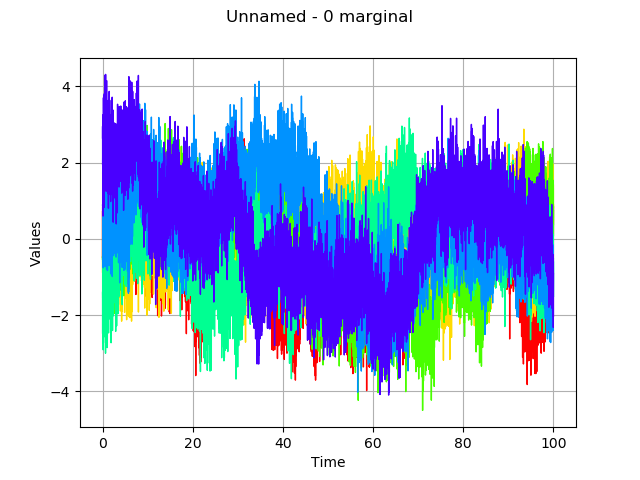

Create a gaussian process from a cov. model using HMatrix¶
In this basic example we are going to build a gaussian process from its covariance model and using the HMatrix as sampling method.
[1]:
from __future__ import print_function
import openturns as ot
Define the covariance model :
[2]:
dimension = 1
amplitude = [1.0] * dimension
scale = [10] * dimension
covarianceModel = ot.AbsoluteExponential(scale, amplitude)
Define the time grid on which we want to sample the gaussian process :
[3]:
# define a mesh
tmin = 0.0
step = 0.01
n = 10001
timeGrid = ot.RegularGrid(tmin, step, n)
Finally define the gaussian process :
[4]:
# create the process
process = ot.GaussianProcess(covarianceModel, timeGrid)
print(process)
GaussianProcess(trend=[x0]->[0.0], covariance=AbsoluteExponential(scale=[10], amplitude=[1]))
We set the sampling method to HMAT
[5]:
process.setSamplingMethod(1)
We sample the process :
[6]:
# draw a sample
sample = process.getSample(6)
sample.drawMarginal(0)
[6]:

We notice here that we are able to sample the covariance model over a mesh of size 10000, which is usually tricky on laptop. This is mainly due to the compression.